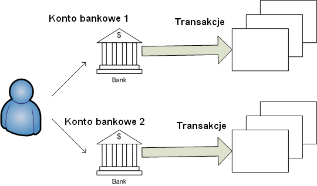

Używanie Money Manager Ex
Import danych
Eksport danych
Money Manager Ex jest darmowym i łatwym w użyciu osobistym programem finansowym, do zarządzania Twoimi pieniędzmi. Przede wszystkim pomaga organizować finanse oraz śledzić skąd, dokąd i jak pieniądze wpływają i wypływają.
Uważaj Money Manager Ex (MMEX) za komputerową książkę czekową, która umożliwia Ci zbilansowanie Twoich rachunków bankowych, a także zorganizowanie, zarządzanie i generowanie raportów Twoich finansów.
Jest to również doskonały sposób na bieżące śledzenie swojej wartości finansowej.
Podstawowym celem MMEX jest uproszczenie procesu nadzorowania informacji finansowych, bez skomplikowania jakie występuje w niektórych popularnych programach do obsługi finansów osobistych.
Celem tej instrukcji jest wprowadzenie do podstaw używania MMEX. Instrukcja będzie rozwijana wraz z rozwojem programu. Przy każdej aktualizacji programu sprawdź więc system pomocy do jego obsługi, aby zobaczyć co w nim jest nowego i jak lepiej użytkować MMEX.
- Regularnie wykonuj kopię Twojego pliku
.mmb lub .emb z bazą danych.
- Jeżeli aktualizujesz program MMEX
do nowej wersji, upewnij się, że wcześniej wykonałeś kopię
pliku .mmb lub .emb z Twoją bazą danych.
Finansowe zorganizowanie się wymaga pewnej
dozy samodyscypliny. Zarządzanie finansami wydaje się skomplikowane
ze względu na brak jasnego zrozumienia przepływu gotówki lub idei
"przychody vs wydatki". Zadłużenie jest zwykle rezultatem
przekroczenia wydatków w stosunku do przychodów.
Pierwszym
krokiem do lepszej organizacji finansów jest prowadzenie dobrych
zapisów. Tylko wtedy, kiedy są rozpoznane codzienne wydatki, można
wysnuć wnioski jak je ograniczyć.
Czy zdajesz sobie sprawę, że wydałeś 1800
zł na kupno filmów na DVD w ubiegłym roku? Ile razy je obejrzałeś?
Czy może teraz uważasz, że te 1800 zł lepiej by było przeznaczyć
na naprawę niespodziewanej usterki samochodu, która zdarzyła się
wczoraj? Oczywiście nie ma dobrej lub złej odpowiedzi na pytanie
jak powinieneś wydawać swoje pieniądze. W końcu są to Twoje
pieniądze i masz prawo do wydania ich w dowolny sposób, jaki uznasz
za dobry. Zawsze jednak możesz spowodować, żeby Twoje pieniądze
pracowały dla Ciebie. Przecież chcesz lepiej zainwestowanej
"złotówki/lira/funta".
Tu jest właśnie miejsce
dla programów do zarządzania osobistymi finansami. Pomagają one
poukładać cząstki danych finansowych i dają lepszy wgląd w
sytuację finansową. Zawsze pamiętaj, że program może być tylko
wtedy pomocny, kiedy ma do dyspozycji jak najwięcej rzetelnych
danych do analizy. Wprowadzisz do programu "śmieci", to w
wyniku je otrzymasz. Jeżeli jednak zaczniesz zastanawiać się nad
tym lub używać programu do zarządzania finansami osobistymi jesteś
na dobrej drodze do pełnej kontroli nad każdą złotówką.
Dowiedz się, jak używać Money Manager Ex.
Money Manager Ex modeluje rzeczywisty świat finansowy poprzez pojęcie transakcji. Transakcja jest zdarzeniem finansowym, w którym wymieniane są pieniądze / usługi. Taką transakcją może być spłacanie raty kredytu, kupno samochodu, płatność za posiłek w restauracji itp. Każda transakcja jest powiązana z kontem (rachunkiem) i kategorią.

Konto jest zapisem tego, co albo
posiadamy, albo jesteśmy winni.
Dla przykładu, Twoje konto
czekowe jest zapisem środków zdeponowanych w banku, które są
dostępne poprzez realizację czeków, wypłaty z bankomatów lub
wykonywanie transakcji z użyciem karty płatniczej. Konto karty
kredytowej jest zapisem środków, które jesteś winien wystawcy
karty po wykonaniu zapłaty kartą kredytową. Wszystkie transakcje
powiększają lub pomniejszają bilans na jednym lub kilku kontach.
Kategorie
są to sklasyfikowane miejsca skąd pieniądze
wpływają lub dokąd wypływają.
Na
przykład: Twoja płaca to środki,
które otrzymujesz za pracę i jest ona odmianą przychodów. Środki
otrzymywane z odsetek od inwestycji także są rodzajem przychodów.
Mamy zatem kategorię
Przychody, z
podkategoriami
Płaca oraz
Odsetki od inwestycji.
Jeżeli
zechcesz ustalić koszt wydatków na obiady w restauracjach, jak dużo
wydajesz na artykuły spożywcze, ile kosztuje cię paliwo do
samochodu oraz ile kosztuje cię jego utrzymanie, powinieneś
utworzyć kategorie wydatków z następującymi
podkategoriami:
utwórz kategorię Żywność
z podkategoriami Artykuły
spożywcze i Obiady,
oraz kategorię Samochód
z podkategoriami Paliwo
i Utrzymanie.
Takie kategorie umożliwią Ci śledzenie w jaki sposób otrzymujesz i wydajesz pieniądze na wymienione cele.
Można także spojrzeć na MMEX jako na
system zapisów przepływu środków oraz ilości posiadanych
pieniędzy.
Konta wskazują gdzie są pieniądze. Środki wpływają
jako depozyty (przychody),
a wychodzą jako obciążenia
(wydatki). Środki przekazywane w obrębie
systemu kont są przelewami
(np. spłata karty kredytowej).
Na
przykład: Pieniądze są wpłacane
na Twoje bieżące konto prze Twojego pracodawcę
jako płaca. Pieniądze wychodzą z Twojego
konta karty kredytowej kiedy kupujesz artykuły spożywcze w
supermarkecie przy
użyciu karty kredytowej. Środki są przelewane z konta bieżącego
na konto karty kredytowej w momencie jej spłaty. Pieniądze wydajesz
także płacąc gotówką za artykuły spożywcze w sklepie
osiedlowym.
Dlatego tutaj właśnie
MMEX wymaga beneficjenta,
którym jest tu sklep osiedlowy, pracodawca i supermarket.
Beneficjent to podmiot od którego dostajesz pieniądze lub któremu je przekazujesz.
Aby MMEX był efektywny, bardzo ważne jest zapisywanie wszystkich wykonanych transakcji na odpowiednich kontach. Nawet jeśli nie masz zwyczaju bieżącego wprowadzania transakcji, powinieneś je wprowadzić przynajmniej po otrzymaniu miesięcznego wyciągu od wydawcy karty kredytowej lub banku.
Po wprowadzeniu transakcji, MMEX może pomóc Ci w uzyskaniu użytecznych informacji. Na przykład, poda Ci jaki jest obecny bilans Twoich finansów. Dostarczy także informacji jak wiele wydajesz w porównaniu do tego jak dużo zarabiasz. Ta wiedza pomoże Ci podejmować lepsze decyzje finansowe.
W celu rozpoczęcia pracy z Money Manager, powinieneś utworzyć nowy plik danych. Wszystkie transakcje wprowadzone do MMEX są zachowywane w pliku danych (z rozszerzeniem .mmb) na twardym dysku. Plik ten zawiera wszystkie elementy - konta, kategorie i transakcje, które składają się na Twój stan finansów.
Chociaż jest możliwe utworzenie więcej niż jednego pliku danych MMEX, zwykle nie jest to konieczne. Jeden plik może przechowywać wszystkie Twoje transakcje i konta. Nie ma limitu co do liczby kont i transakcji, które można prowadzić w jednym pliku danych. Jedynymi sensownymi powodami, dla których możesz chcieć utworzyć więcej niż jeden plik danych, jest użycie MMEX do organizowania Twoich osobistych finansów oraz finansów małej firmy, którą prowadzisz, albo jeżeli współdzielisz komputer z inną osobą i utrzymujecie osobne zapisy danych finansowych.
Zaraz po uruchomieniu, MMEX próbuje odczytać ostatnio otwarty plik danych. Jeżeli jeszcze nie ma takiego pliku, użytkownik ma wybór otwarcia wskazanego innego istniejącego pliku, albo utworzenia nowego.
Jeżeli zachodzi potrzeba utworzenia nowego pliku z Menu, wybierz Plik->Nowa baza danych.
Zostanie wyświetlony monit o określenie nazwy dla pliku danych .mmb, w wybranej lokalizacji. Twój nowy plik danych jest utworzony i wyświetli się kreator nowej bazy aby pomóc Ci w utworzeniu pierwszego konta. Tworzenie nowego konta.
Kreator nowej bazy zażąda od Ciebie ustawienia podstawowej waluty oraz nazwy użytkownika.
MMEX posiada pewien zestaw walut, które możesz użyć, odpowiednio do waluty Twojego kraju. Nowe konta będą używały podstawowej waluty ustawionej jako domyślna. To pozwala kontom w innych walutach odzwierciedlać wartość w walucie bazowej.
Nazwa użytkownika jest wymagana oraz wyświetlana w tytule strony głównej.
Jeżeli zajdzie taka potrzeba, obydwie te wartości mogą być później zmienione przez menu: Narzędzia ->Opcje
Nazwa pliku bazy jest widoczna na pasku
tytułowym, co pomaga w ustaleniu, jaki plik bazy jest otwarty.
Nowo
utworzony plik bazy .mmb nie jest zaszyfrowany.
Szyfrowanie
pliku bazy danych.
Plik może zostać zaszyfrowany w następujący sposób: wybierz w Menu Plik->Zachowaj bazę danych jako
Wskaż lokalizację oraz wybierz Twój plik .mmb lub nadaj nową nazwę plikowi danych.
Zmień typ w polu Zapisz jako typ: na: 'Encrypted MMB file (*.emb)' - szyfrowany plik MMB. Wtedy kiliknij Zapisz
Podaj hasło do pliku – Będziesz musiał wpisywać to hasło podczas każdego otwierania pliku bazy.
Porady:
Pamiętaj o robieniu kopii Twoich plików danych .mmb lub .emb.
Jeżeli
plik nie jest zaszyfrowany:
Pamiętaj, że każdy, kto
posiada odpowiednią wiedzę, może otworzyć plik i odczytać jego
zawartość. Upewnij się więc, że ważne informacje finansowe
zawarte w pliku, są bezpieczne.
Dla zaszyfrowanych plików danych: Zapamiętaj Twoje hasło.
MMEX umożliwia zarządzanie kontami prowadzonymi w różnych walutach. O wybranie waluty powiązanej z danym kontem, program poprosi Cię w czasie tworzenia nowego konta. Walutę można także wybrać/zmienić później, korzystając z menu Konta -> Edytuj konto.
Ponadto MMEX umożliwia ustawienie waluty głównej (bazowej) dla całego programu przez menu Narzędzia - > Opcje (sekcja Ustawienia ogólne - > Waluta bazowa). W walucie bazowej wyliczana będzie SUMA OGÓLNA wszystkich środków zgromadzonych na wszystkich kontach – nawet jeśli te konta prowadzone są w różnych walutach.
Jeżeli na proponowanej liście nie ma waluty, którą chcesz użyć, możesz ją dodać do listy walut. W tym celu wywołaj dialog „Organizuj waluty” za pomocą menu Narzędzia -> Organizuj waluty. W oknie walut kliknij przycisk „Dodaj” - co wywoła okno dialogowe, w którym należy podać nazwę nowej waluty – np. POLSKI ZŁOTY. Po potwierdzeniu nazwy pokaże się okno ustawień waluty. Tu należy ustalić szczegóły:
'Symbol waluty' – wpisz międzynarodowy symbol waluty lub wybierz z listy rozwijanej – np. 'PLN'
'Nazwa jedn. podstawowej' – wpisz nazwę głównej jednostki waluty – np. 'złoty'
'Nazwa jedn. zdawkowej' – tu należy wpisać nazwę części ułamkowej jednostki głównej – np. 'grosz'
'Symbol prefiksu' – określ symbol waluty, który będzie pojawiał się zawsze przed kwotą lub pozostaw puste (np. dla złotówek)
'Symbol postfiksu' – określ symbol waluty, który będzie pojawiał się zawsze za kwotą lub pozostaw puste – np. dla złotówek będzie to 'zł' lub ' zł' (wtedy po kwocie, a przed symbolem będzie pożądana przerwa)
'Znak dziesiętny' – określ znak oddzielający część ułamkową kwoty – np. ',' (w Polsce to przecinek)
'Znak grupowania' – wpisz znak oddzielający każde trzy miejsca kwoty (tysiące) – np. ' ' (spacja)
'Skala' – ustaw ilość jednostek zdawkowych w jednostce podstawowej – zwykle jest to '100' (1 zł = 100 gr.)
'Konwersja do kursu bazowego' – w tym miejscu ustala się kurs wymiany waluty w stosunku do waluty bazowej. Jeżeli waluta jest bazowa (tj. ustawiona w opcjach jako główna), w tym polu powinna być jedynka '1'. Przyjmując, że złoty jest walutą bazową ('1'), to np. dla dolara, w tym polu można wpisać kurs wymiany - np. '2,75' – wtedy pole SUMA OGÓLNA kont na stronie głównej, będzie podawała aktualną wartość wszystkich kont w złotych po przeliczeniu kont w USD na złotówki wg kursu 1 USD=2,75 zł.
Na dole okna będzie przykład jak wyświetlana będzie kwota waluty z danymi ustawieniami. Po każdej zmianie ustawień należy odświeżyć ten przykładowy widok klikając przycisk 'Uaktualnij'.
UWAGA 1: Można wpisywać kursy wymiany ręcznie (funkcja 'Edytuj' w oknie 'Organizuj waluty'), albo skorzystać z wygodnego uaktualniania kursów wszystkich walut przez internet, korzystając z menu Narzędzia -> Uaktualnij kursy walut online. Aby ta funkcja była dostępna, należy najpierw w Opcjach programu, w sekcji 'Inne' zaznaczyć pole Włącz odświeżanie waluty online. Ponadto należy pamiętać, że aby uaktualnianie online działało poprawnie, każda waluta powinna mieć ustawiony prawidłowy międzynarodowy symbol (w polu „Symbol waluty') tj. PLN dla złotówki, USD dla dolara, GPB dla funta itd.
UWAGA 2: Kursy walut uaktualniane online są oficjalnymi kursami wymiany walut na rynku międzynarodowym. Mogą one różnić się od kursu wymiany w lokalnych bankach (tzw. spread) lub kantorach wymiany walut.
W czasie tworzenia nowego pliku danych zostaniesz automatycznie poproszony o utworzenie nowego konta.
W celu ręcznego utworzenia nowego konta, wybierz z menu Konta->Nowe konto.
To spowoduje wywołanie Kreatora dodawania konta. Kreator będzie Ci asystował przy podawaniu ważnych informacji o nazwie i typie konta. Typu konta nie można później zmienić, ale nazwę można zmieniać w czasie edycji informacji.
Nazwa konta: Jest to wymagane pole. Jest wskazane, aby nazwy kont były unikatowe i powiązane z rzeczywistymi kontami bankowymi. Przykład: W CitiBank masz zwykłe konto bieżące oraz konto karty kredytowej Visa. Możesz nadać kontom nazwy "CitiBank ROR" oraz “CitiBank Visa”.
Rodzaje kont: MMEX obecnie wspiera trzy typy kont:
Konta “czekowe/oszczędnościowe”: Jest to najczęściej używany typ konta w MMEX, ponieważ może obsłużyć większość popularnych kont bankowych, takich jak rachunki czekowe, oszczędnościowe, oraz konta kart kredytowych. Są to zwykłe konta bankowe obsługujące trzy rodzaje transakcji: wypłaty, wpłaty i przelewy.
Konta “terminowe”:
podobne do konta czekowego z wyjątkiem tego,
że są one wyświetlane w odrębnej sekcji na stronie głównej i
mogą być ukryte przy codziennym używaniu MMEX. W celu lepszego
zrozumienia zobacz przykład ustawienia
konta.
Te rodzaje kont są przeznaczone do specjalnych
rachunków bankowych, jak lokaty, konta kredytów hipotecznych,
rachunki zaciągniętych kredytów lub konta inwestycyjne z
regularnymi wpływami lub wydatkami, które musisz śledzić.
Rachunki te mają swój własny bilans w specjalnej sekcji strony
głównej. Te konta także obsługują trzy rodzaje transakcji.
Konta “inwestycyjne”: Innym rodzajem kont wspieranych przez MMEX są konta "inwestycyjne". Ten typ konta pozwala na śledzenie akcji / obligacji / funduszy inwestycyjnych oraz innych możliwych inwestycji, jakie możesz posiadać.
Do prawidłowego utworzenia konta, powinieneś mieć informacje o jego bilansie. Możesz wykorzystać dane otrzymane jako ostatni wyciąg z banku, lub zestawienie inwestycji i transakcji kredytowych. Opcjonalnie możesz też wprowadzić inne dane, takie jak numer konta bankowego, nazwę banku, stronę internetową banku, informacje kontaktowe i dostępowe. Możesz także dodać dowolną notkę na temat konta w polu notatek.
Większość rachunków ma jakiś aktualny bilans, np. na koncie karty kredytowej bieżący bilans wynosi aktualnie -2304,67 zł (bilans kredytowy jest oczywiście ujemny). Możesz wprowadzić ten bilans jako początkowy. W przyszłości będziesz musiał tylko dodawać transakcje wykonane po dacie utworzenia rachunku i podania bilansu początkowego.
Status konta
może być ustanowiony jako "Otwarte"
lub "Zamknięte". Zamknięte konta to te, które nie są
już aktywne. Nadanie tego statusu spowoduje wykluczenie konta z
widoku drzewka w panelu nawigacyjnym. Stałe ustawienia widoku są
dostępne przez zmianę opcji w Menu Narzędzia->Opcje. Tam możesz
wyłączyć ukrywanie zamkniętych kont. Zobacz porady
na temat panelu nawigacji
Waluta:
Początkowo
jest proponowana waluta bazowa, ustawiona w czasie tworzenia pliku
bazy. Możesz tu jednak ustawić
inną niż bazowa walutę skojarzoną z tym kontem. Kurs przeliczania
walut może być zmieniony w menu: Narzędzia
->Organizuj waluty
Przykład: Mieszkasz w Polsce i używasz złotówki PLN. Masz także konto PayPal w dolarach USD. Większość Twoich kont jest w złotówkach. Jaka jest zatem aktualna wartość konta PayPal w przeliczeniu na zł? Możesz uzyskać prawidłową wartość przez zmianę kursu wymiany dolara.
Można także zaznaczyć konto jako 'Ulubione'. To ustawienie jest także wykorzystywane do ukrywania lub pokazywania kont w panelu nawigacji. Zobacz porady na temat panelu nawigacji
Mamy konto oszczędnościowe z bilansem 1250
zł, bieżące konto czekowe z bilansem 500 zł, kartę MasterCard z
długiem 250 zł, kartę Visa z długiem 475 zł, kredyt hipoteczny
230965 zł oraz oprocentowane konto funduszu edukacyjnego, aby wysłać
dzieci na studia w przyszłości, z obecnym stanem 5000 zł.
Należy
utworzyć następujące konta:
|
Rodzaj konta |
Nazwa konta |
Bilans początkowy |
|
Czekowe/oszczędnościowe |
Oszczędności |
1 250,00 zł |
|
|
Bieżące |
500,00 zł |
|
|
Karta MasterCard |
-250,00 zł |
|
|
Karta Visa |
-475,00 zł |
|
Terminowe |
Hipoteka |
-230 965,00 zł |
|
|
Fundusz edukacyjny |
5 000,00 zł |
Na stronie głównej będzie pokazany
bilans: 1025 zł dla kont bankowych oraz -225 965 zł dla kont
terminowych
Kiedy robisz płatność z konta oszczędnościowego na konto MasterCard przy użyciu transakcji Przelew bilans na stronie głównej pozostaje taki sam. Kiedy wykonujesz przelew z konta oszczędnościowego na hipotekę, bilans na stronie głównej będzie odzwierciedlać płatność. Możesz ustalić kwotę codziennych płatności. Regularne płatności z rachunku oszczędnościowego na hipotekę mogą być ustawione przy pomocy opcji Transakcje powtarzane.
Przy wielu utworzonych kontach panel
nawigacyjny i strona główna mogą osiągnąć rozmiar
przekraczający widoczny ekran.
Pokazywany widok może być
czasowo zmieniany w celu pokazywania bądź ukrywania niektórych
elementów:
|
Panel nawigacyjny: |
Rozwiń/Zwiń gałęzie kont przy użyciu węzłów +/- drzewka kont. |
|
Strona główna: |
Użyj menu: Widok ->Konta bankowe i/lub menu: Widok ->Rachunki terminowe |
Użycie prawego przycisku myszy na:
'Kontach bankowych' w panelu nawigacyjnym, umożliwia dostęp do tymczasowych opcji zmiany pokazywania / ukrywania kont, a także do wielu innych przydatnych opcji.
jakiejkolwiek nazwie konta bankowego wywołuje podręczne menu z użytecznymi opcjami.
Stałe ustawienia widoku można ustawić przy użyciu menu: Narzędzia ->Opcje -->Opcje wyświetlania
Po utworzeniu konta, możesz edytować każde pole informacji o koncie poprzez wskazanie nazwy konta w panelu nawigacyjnym prawym klawiszem myszki - spowoduje to wywołanie podręcznego menu. Wybierz "Edytuj konto" w celu wywołania okna informacji. Edytuj informacje i kliknij "OK" aby zachować zmiany.
Po utworzeniu konta, można rozpocząć
wprowadzanie transakcji. Wybierz konto do wprowadzenia transakcji
przez kliknięcie lewym klawiszem myszki w drzewku panelu
nawigacyjnego. To otworzy rejestr transakcji przypisanych do tego
konta. Aby utworzyć nową transakcję, wybierz przycisk "Nowy"
w celu otwarcia okna 'Nowa/Edytuj transakcję'. Wprowadź szczegóły
tej operacji. Rozpocznij od wyboru rodzaju transakcji spośród
"Wpłata", "Wypłata" lub "Przelew".
Następnie wybierz beneficjenta, kategorię, datę operacji, numer,
opcjonalnie notki oraz na końcu kwotę transakcji. Wciśnij przycisk
"OK" aby zatwierdzić transakcję.
Poniżej
przedstawiono parę uwag do pól występujących w oknie tworzenia
transakcji.
Rodzaje
transakcji:
Wypłata: to operacja wykonywania płatności i jest wydatkiem.
Wpłata: to operacja otrzymywania płatności i jest dochodem.
Przelew: to operacja
wypłacania kwoty z jednego konta i wpłacania jej natychmiast na
inne konto.
Ten typ transakcji nie jest uwzględniany w
obliczeniach Przychody/Rozchody.
Przelew aktywuje przycisk
Zaawansowane. Jest on używany w nietypowych sytuacjach,
kiedy wymagane jest zarejestrowanie innej kwoty wypłaty z konta
“źródłowego” jako kwoty wpłaty na koncie “docelowym” lub
przeciwnie.
(Dlatego jest to opcja 'zaawansowana'). Kiedy kwota
przelewu na koncie docelowym jest różna od kwoty na koncie
źródłowym, obok przycisku “Zaawansowane”, jest wyświetlone
ostrzeżenie “Aktywne!” .
Beneficjent: jest to osoba lub organizacja od której otrzymujemy pieniądze lub której przekazujemy pieniądze.
Kliknięcie przycisku 'Beneficjenci' otwiera okno wyboru. Można wybrać z listy istniejącego beneficjenta lub utworzyć nowego.
Kategoria: jest to sklasyfikowany rodzaj wydatków lub przychodów dla transakcji.
Kliknięcie przycisku 'Kategoria' otwiera okno wyboru. Można wybrać z listy istniejącą kategorię lub utworzyć nową.
Numer transakcji: to pole do
wprowadzenia dowolnego numeru powiązanego z transakcją np. numer
czeku.
Status transakcji: Opcje statusu można
wybrać spośród "Niepotwierdzone", "Potwierdzone",
"Unieważnione", "Do wyjaśnienia". Nadaje to
transakcji znak różnych stanów.
Niepotwierdzone: Po utworzeniu transakcji jej początkowy status to "Niepotwierdzone". To znaczy, że transakcja nie została jeszcze potwierdzona w bilansie na koncie w banku / wystawcy karty kredytowej.
Potwierdzone: Jeżeli transakcja została sprawdzona i zweryfikowana na bilansie z banku / od wystawcy karty kredytowej, może zostać zaznaczona jako potwierdzona.
Unieważnione: Jeżeli wprowadzona transakcja stanie się później nieprawidłowa lub niepotrzebna, wówczas zamiast ją skasować możesz oznaczyć ją jako unieważnioną. Zachowasz wtedy jej zapis.
Do wyjaśnienia: Ten status oznacza, że transakcja wymaga dalszych działań. Na przykład, otrzymałeś wyciąg z banku i zauważyłeś, że nie zgadza się kwota zapisana we wprowadzonej transakcji w porównaniu z zapisem na otrzymanym wyciągu. Wtedy możesz zaznaczyć tę transakcję jako do wyjaśnienia z bankiem.
W celu edytowania istniejącej transakcji, zaznacz ją i naciśnij przycisk 'Edytuj'. Alternatywnie, możesz dwukrotnie kliknąć na wybranej transakcji. Innym sposobem jest wciśnięcie klawisza Enter po wyborze transakcji. Każda z tych akcji otworzy okno ze szczegółami transakcji.
Dla przelewów będzie aktywny przycisk “Zaawansowane”. Kiedy kwota przelewu na koncie docelowym jest różna od kwoty na koncie źródłowym, obok przycisku “Zaawansowane”, jest wyświetlone ostrzeżenie “Aktywne!” aby zaznaczyć wykorzystanie opcji zaawansowanych.
Wprowadź zmiany i kliknij OK żeby je zachować.
Transakcje wprowadzone do MMEX są uważane za niepotwierdzone. To znaczy, że nie zostały zweryfikowanie z bilansem instytucji finansowej. Jeżeli przychodzi wyciąg lub nastąpi sprawdzenie transakcji w banku online, może być ona uważana za potwierdzoną, jeżeli tylko jej szczegóły są zgodne z danymi banku. Wówczas transakcja powinna zostać oznaczona jako potwierdzona. Przez takie oznaczenie możesz śledzić czy dane, które wprowadzasz są zgodne z rzeczywistymi. W programie MMEX, potwierdzone i niepotwierdzone operacje są wyróżniane za pomocą innych ikonek.
Porada:Żeby zaznaczyć transakcję jako potwierdzoną, wskaż ją and i wciśnij klawisz 'r' lub 'R'. Aby zaznaczyć transakcję jako niepotwierdzoną, wskaż ją and i wciśnij klawisz 'u' lub 'U'.
Niektóre transakcje mogą mieć jakieś powody, które spowodują, że będą wymagać dalszego wyjaśniania. Użyj wtedy statusu 'do wyjaśnienia'. Jest to wyróżniane w programie MMEX odpowiednią ikonką.
Porada:
Żeby zaznaczyć transakcję jako wymagającą wyjaśnienia, wskaż ją i wciśnij klawisz 'f' lub 'F'.
Beneficjent jest istniejącym w realnym
świecie bytem, któremu płacimy lub od którego otrzymujemy
płatności.
Zobacz przykłady
beneficjentów. Możesz zarządzać beneficjentami w MMEX
korzystając z menu, Narzędzia ->
Organizuj beneficjentów.
Po otwarciu okna beneficjentów możesz dodać nowego, wpisując jego nazwę w pole tekstowe i wybierając przycisk 'Dodaj'. Możesz też wybrać beneficjenta z listy i zmienić jego nazwę lub usunąć jego wpis.
Uwaga: Nie można usunąć
beneficjenta, który jest wykorzystywany przez jakąkolwiek
istniejącą transakcję.
Przed usunięciem beneficjenta, upewnij
się, że żadna transakcja go nie dotyczy. Można to zrobić przez
edycję transakcji i zmianę beneficjenta, lub skasowanie transakcji.
Kiedy wszystkie łącza do beneficjenta są usunięte, można go
usunąć.
Kategorie wskazują miejsca skąd pieniądze
wpływają lub gdzie / na co są wydawane.
Zobacz przykłady
kategorii.
W MMEX można zarządzać kategoriami z menu,
Narzędzia -> Organizuj
kategorie.
Po otwarciu okna
kategorii, można dodawać nowe kategorie i podkategorie.
W celu dodania nowej kategorii:
wybierz
tekst Kategorie na górze drzewka (okienka) i wtedy wpisz
nazwę nowej kategorii do pola tekstowego oraz wciśnij przycisk
Dodaj. Nowa kategoria pojawi się na dole okna, a po ponownym
otwarciu okna kategorii zajmie miejsce wynikające z sortowania
alfabetycznego.
Aby dodać nową podkategorię:
Wybierz
kategorię nadrzędną, do której chcesz dodać podległą
podkategorię, następnie wpisz nazwę podkategorii do pola
tekstowego i naciśnij przycisk Dodaj .
Możesz także zmieniać nazwy poprzez wybranie kategorii / podkategorii z listy, a następnie zmodyfikowanie jej nazwy w polu tekstowym i użycie przycisku 'Edytuj'. W podobny sposób usuwa się kategorie / podkategorie z listy.
Uwaga: Nie można usunąć kategorii,
która jest w użyciu przez jakąkolwiek istniejącą
transakcję.
Przed usunięciem kategorii / subkategorii, upewnij
się, że żadna transakcja ich nie wykorzystuje.
MMEX może importować dane z wielu formatów.
Jednym z nich jest ustalony format pliku CSV. Format tego pliku
odpowiada dokładnie formatowi pliku CSV, który MMEX może
eksportować. Może to być przydatne do przeniesienia danych z
jednego pliku danych .mmb, do innego. W celu łatwego zobaczenia
formatu pliku CSV, możesz spróbować wyeksportować dowolne konto
do pliku CSV i przeanalizować utworzony format.
Ogólny
format pliku jest następujący:
Data - Data
transakcji (w formacie ustawionym w Opcje->Format
daty)
Beneficjent - Dla kogo jest wykonana
transakcja. W przypadku przelewu, pole wskazuje nazwę konta, z
którego przelew został wykonany lub na które został wykonany.
Typ
transakcji - To może być albo "Withdrawal
(Wypłata)" albo "Deposit (Wpłata)"
Kwota
- Kwota transakcji jako wartość dodatnia
Kategoria
- Kategoria transakcji
Podkategoria - Podkategoria
transakcji jeżeli występuje (lub puste pole)
Numer
- Numer transakcji
Notatki - uwagi do
transakcji
Zauważ, że transakcje z pliku CSV mogą być
zaimportowane tylko do pojedynczego konta programu MMEX.
Quicken Interchange Format (QIF) jest otwartą
specyfikacją do odczytu i zapisu danych finansowych na media (np.
pliki). Plik QIF typowo ma następującą strukturę:
!Typ:ciąg
identyfikacji typu
[pojedynczy znak kodu linii]Dosłowny ciąg
Data
...
^
[pojedynczy znak kodu linii]Dosłowny ciąg
Data
...
^
Każdy rekord kończy się znakiem ^
(daszek).
Zobacz przykład transakcji QIF
!Type:Bank -
Nagłówek
D6/ 1/94 Data
T-1,000.00 - kwota
N1005 -
numer
PBank - płatność
^ Koniec transakcji
QIF jest
starszy niż format Open Financial Exchange (OFX). Niemożność
potwierdzenia importowanych transakcji z bieżącymi informacjami o
koncie jest jednym z głównych wad formatu QIF. Format jest zwykle
stosowany przez instytucje finansowe dla plików do pobierania
informacji przez posiadaczy kont.
MMEX może importować
transakcje konta ze specyficznego typu formatu QIF.
Typy są
następujące: (możesz zobaczyć typ QIF otwierając plik w edytorze
tekstowym)
!Type:Bank - transakcje na koncie bankowym
!Type:Cash
- transakcje na koncie gotówkowym
!Type:CCard - transakcje na
koncie karty kredytowej
Ważna uwaga (1): Opcje
formatu daty w MMEX muszą być zgodne z formatem daty w pliku QIF, w
innym przypadku, przetwarzanie daty w MMEX nie powiedzie się, co
będzie miało ten skutek, że transakcje będą miały nieprawidłowe
daty.
Ważna uwaga (2): Po imporcie z pliku QIF,
wszystkie transakcje będą miały ustawiony status "Do
wyjaśnienia". Możesz zmienić ten status dla wszystkich
transakcji używając komendy globalnej zmiany dostępnej w menu
podręcznym pod prawym klawiszem myszy w widoku konta.
MMEX może także importować dane z plików
CSV, które zostały wyeksportowane z programu Money Manager.NET. To
przede wszystkim pomoże użytkownikom tego programu przejść na
nowszy MMEX.
Ogólny format jest następujący:
Data
- Data transakcji (w formacie ustalonym w
Opcje->Format Daty)
Beneficjent
- Dla kogo przeznaczona jest transakcja. W
przypadku przelewu, pole wskazuje nazwę konta, z którego przelew
został wykonany lub na które został wykonany.
Kwota
- Kwota transakcji. Jeżeli jest dodatnia,
uważana jest za wpłatę, jeżeli ujemna, za wypłatę.
Numer
- Numer transakcji
Status
- Status transakcji
Kategoria
- Kategoria transakcji. Jest to w rzeczywistości
ciąg złożony z typów "Kategoria:Podkategoria"
Notatki
- Uwagi do transakcji
Zauważ, że
transakcje z pliku CSV mogą być zaimportowane tylko do pojedynczego
konta programu MMEX.
Aby umożliwić użytkownikom otrzymującym z
banku wstępnie sformatowane pliki CSV, ich import do ustalonego
formatu MMEX, program pozwala także na import plików CSV, w których
porządek pól jest całkowicie dowolny. W celu użycia tego
importera wybierz konto, które chcesz importować, a potem wybierz
pożądany porządek pól w pliku CSV przez wskazanie i wybranie z
listy możliwych pól. MMEX będzie teraz mógł importować plik CSV
używając formatu informacji wskazanego przez użytkownika. MMEX
potrafi importować dane z szerokiego zakresu formatów. Jednym z
nich jest ustalony format CSV. Format takiego pliku jest zgodny z
formatem CSV jaki MMEX może eksportować. Może to być użyteczne
do przeniesienia danych z jednego pliku .mmb do innego. W celu
zapoznania sie z takim formatem pliku CSV, spróbuj wyeksportować
dane konta do pliku CSV i przeanalizować format tak utworzonego
pliku.
Opcje pól CSV są następujące:
Data
- Data transakcji (w formacie określonym w Opcje->Format
daty)
Beneficjent - Dla kogo przeznaczona jest
transakcja. W przypadku przelewu, pole wskazuje nazwę konta, z
którego przelew został wykonany lub na które został
wykonany.
Kwota (+/-) - Kwota transakcji. Jeżeli
jest dodatnia, uważana jest za wpłatę, jeżeli ujemna, za
wypłatę.
Kategoria - Kategoria
transakcji
Podkategoria - Podkategoria transakcji
Notatki - Uwagi do transakcji
Numer
- Numer transakcji
Withdrawal - dodatnia kwota jest
uważana za wypłatę. (Nie używane jeśli kwota jest określona
znakami (+/-))
Deposit - dodatnia kwota jest uważana
za wpłatę. (Nie używane jeśli kwota jest określona znakami
(+/-))
Don't Care - Ignoruj to pole
Zauważ,
że transakcje z pliku CSV mogą być zaimportowane tylko do
pojedynczego konta programu MMEX.
Ważna uwaga (1):
Opcje formatu daty w MMEX muszą być zgodne z formatem daty w pliku
CSV, w innym przypadku, przetwarzanie daty w MMEX nie powiedzie się,
co będzie miało ten skutek, że transakcje będą miały
nieprawidłowe daty.
Ważna uwaga (2): Po imporcie z
pliku CSV, wszystkie transakcje będą miały ustawiony status "Do
wyjaśnienia". Możesz zmienić ten status dla wszystkich
transakcji używając komendy globalnej zmiany dostępnej w menu
podręcznym pod prawym klawiszem myszy w widoku konta.
Po utworzeniu pliku CSV upewnij się, że zostały w nim usunięte przecinki z kwot wpłat i wypłat. Można to łatwo wykonać za pomocą programów takich jak Excel czy OpenOffice Calc oraz innych.
Alternatywnie możesz zmienić typ rozdzielacza pól pliku CSV używany przez MMEX. W menu 'Narzędzia -> Opcje', w sekcji "Ogólne", zmienisz go w polu "Ustawienia Importu/Eksportu".
Nie ma potrzeby zawierania wartości bilansu konta w pliku CSV.
Zauważ, że transakcje z takiego pliku CSV mogą być zaimportowane tylko do pojedynczego konta w programie MMEX.
MMEX może eksportować dane do pliku CSV.
Format tego pliku odpowiada dokładnie formatowi, który MMEX może
importować. Może to być użyteczne do przeniesienia danych z
jednego pliku .mmb do innego. W celu zapoznania się z takim formatem
pliku CSV, spróbuj wyeksportować dane konta do pliku CSV i
przeanalizować format tak utworzonego pliku.
Ogólny format
jest następujący:
Data - Data transakcji (w
formacie określonym w Opcje->Format daty)
Beneficjent
- Dla kogo przeznaczona jest transakcja. W przypadku przelewu, pole
wskazuje nazwę konta, z którego przelew został wykonany lub na
które został wykonany.
Typ transakcji - To może
być albo "Withdrawal (Wypłata)" albo "Deposit
(Wpłata)
Kwota - Kwota transakcji jako wartość
dodatnia
Kategoria - Kategoria
transakcji
Podkategoria - Podkategoria transakcji,
jeżeli jest (lub puste)
Notatki - Uwagi do
transakcji
Wszystkie transakcje do konta mogą być
wyeksportowane do pojedynczego pliku CSV.
Z pomocą MMEX możliwe jest śledzenie
inwestycji w akcje i fundusze inwestycyjne
- Najpierw utwórz nowe
konto inwestycyjne, tj. z menu 'Konta' wybierz opcję 'Nowe konto', a
jako typ wybierz 'Inwestycyjne'.
- W widoku drzewka panelu
nawigacyjnego rozwiń węzeł 'Akcje' i wskaż utworzone konto. Wtedy
kliknij przycisk "Nowy"i podaj szczegóły inwestycji.
Zobacz więcej szczegółów.
Aby
zaktualizować cenę twoich akcji, edytuj zapisane inwestycje i zmień
cenę na aktualną.
MMEX umożliwia ustawienie regularnych płatności jako powtarzanych transakcji. Mogą to być także regularne wpłaty lub przelewy, które odbędą się w przyszłości. Przypomnienia o tych transakcjach pojawią się na stronie głównej programu na 14 dni przed zadaną datą.
Dostępne są one przez wybranie 'Transakcje powtarzane' w drzewku panelu nawigacyjnego.
Można utworzyć nową serię powtarzanych transakcji przyciskiem Nowa seria . Jest to podobne do tworzenia nowego konta, z wyjątkiem tego, że na górze okna dialogowego, jest konieczne wskazanie konta, ponieważ transakcje muszą być powiązane z konkretnym kontem, a okno dialogowe wyboru nie jest początkowo powiązane z żadnym kontem.
Należy także ustawić jakąś przyszłą
datę Następnego wystąpienia
, określić częstotliwość powtarzania:
“dziennie”, “tygodniowo” itp., oraz
Ilość
powtórzeń: ile razy nastąpi
transakcja. Brak numeru oznacza nieskończoną ilość powtórzeń.
Jeżeli oprzemy się na początkowym przykładzie i przykładzie ustawień konta, możemy ustawić powtarzaną operację wpłaty na konto w następujący sposób:
Nazwa konta to: Oszczędności,
Następne
wystąpienie – ustawione na jeden tydzień w
przyszłości.
Powtórzenia: “Co tydzień,” Ilość powtórzeń:
brak,
typ transakcji powinien być: “Wpłata”
Beneficjent
to: “Pracodawca”
Kategoria powinna
być: “Przychody:Płaca”
Kwota, powiedzmy: 500, można też
określić status i nacisnąć: OK
Wybierając "Stronę główną' w drzewku panelu nawigacyjnego zobaczymy: 'Przyszłe transakcje' razem z podanym czasem do wystąpienia zdarzenia.
Można wybrać powtarzaną transakcję i użyć podwójnego kliknięcia w celu edycji serii prawego kliknięcia myszy aby wyświetlić menu podręczne z większą ilością opcji.
Po wprowadzeniu transakcji (zrealizowaniu), można zmieniać, beneficjenta, kategorię, status oraz datę jeśli jest wymagane. Wprowadzenie transakcji na konto przed jej planowaną datą, spowoduje, że będzie ona widoczna na tym koncie w kolorze szarym aż do dnia kiedy nadejdzie zadana data realizacji.
Jeżeli ustawimy inną transakcję np. do comiesięcznej spłaty karty Visa, będzie to transakcja typu przelew.
Ustawienie większej ilości transakcji powtarzanych, będzie miało efekt w Raporcie przepływu gotówki.
MMEX umożliwia także śledzenie wartości środków trwałych jak samochody, domy lub inne. Każdy środek może mieć swoją wartość rosnącą lub spadającą o zadany procent na rok, albo nie zmieniać wartości. Suma wartości środków trwałych jest dodawana do Twojej całkowitej wartości finansowej.
MMEX pozwala na odnalezienie transakcji, które spełniają określone kryteria. Można to zrobić używając opcji 'Filtr transakcji'. Wynik działania filtru, w postaci listy transakcji można wydrukować lub zachować jako plik HTML.
MMEX umożliwia zaplanowanie budżetu na rok
i porównanie tego planu z rzeczywistym przepływem środków. W celu
ustawienia budżetu należy kliknąć na węzeł 'Sporządzanie
budżetu' w drzewku panelu nawigacyjnego i podać rok budżetowy. Po
dodaniu roku należy go wskazać i poddać edycji przewidywane kwoty
w każdej kategorii. To rozpocznie budżet na podany rok.
Poprzez
użycie raportu 'Wykonanie budżetu' jest możliwe porównanie
rzeczywistych wydatków, do tych zaplanowanych w bieżącym budżecie.
MMEX dysponuje wieloma rodzajami raportów.
Jeżeli to konieczne, wszystkie te raporty mogą być także
drukowane z menu: Plik->Drukuj... -->Aktualny widok
Odpowiedni raport można wybrać z węzła 'Raporty' panelu nawigacyjnego. Niektóre raporty mogą wymagać dodatkowych danych od użytkownika. Po wyświetleniu można raporty drukować używając komendy Drukuj z menu.
Raporty roku finansowego: (Stosowane w różnych krajach)
Są to raporty, które generalnie nie rozpoczynają się z rozpoczęciem roku kalendarzowego i są widoczne jako inne odgałęzienia głównych raportów. Te raporty obejmują 'Poprzedni rok finansowy' i 'Bieżący rok finansowy'. Domyślną datą rozpoczęcia roku finansowego jest 1 lipca. Użytkownik może zmienić tę datę na jakikolwiek dzień i miesiąc roku.
Tej trwałej zmiany można dokonać przy pomocy menu Narzędzia ->Opcje, po otwarciu panelu Inne.
Raport transakcji:
Umożliwia użytkownikowi generowanie dostosowanych reportów na podstawie podanych kryteriów.
Inną nazwą tego raportu jest 'Filtr transakcji'.
Do prawidłowych wskazań tego raportu muszą być ustawione Transakcje powtarzane na kontach. Wtedy raport uwzględni kwoty przyszłych transakcji z różnych kont i na tej podstawie poda prognozowaną ilość środków dostępnych w ciągu następnych 12 miesięcy.
MMEX umożliwia wydruk wszystkich dostępnych w programie raportów. Wydruk jest możliwy z menu Plik->Drukuj.
Można zmienić niektóre zachowania MMEX przez zmiany w oknie dialogowym 'Opcje'.
Dostęp z menu Narzędzia->Opcje
|
Panel Ogólne |
|
|
Waluta bazowa: |
Waluta bazowa jest używana do wyświetlenia sumy środków na wszystkich rachunkach. |
|
Format daty: |
Ustawienie zarówno wyświetlania daty, jak i jak data będzie interpretowana podczas importowania plików QIF i CSV. |
|
Rozdzielacz CSV |
Znak używany jako rozdzielacz pól przy interpretowaniu plików CSV. Opcja użyteczna do zmiany domyślnego ',' kiedy lokalna waluta używa przecinka do oddzielenia cyfr ułamkowych. (np. w Polsce) |
|
Nazwa użytkownika |
Ten wpis jest wyświetlany w tytule strony głównej. |
|
Język |
Ustawienia języka interfejsu programu MMEX. Program może wymagać ponownego uruchomienia do zastosowania wybranego języka dla wszystkich elementów interfejsu. |
|
Panel Opcji wyświetlania |
|
|
Widoczne konta |
Ta opcja decyduje o widoczności kont w panelu sterowania. |
|
Widoczne transakcje |
Opcja ustawiania jakie transakcje będą widoczne w widoku konta. |
|
Widok drzewka |
Po odświeżeniu strony głównej zostaną rozwinięte konta bankowe w drzewku panelu nawigacyjnego. |
|
Widok drzewka |
Po odświeżeniu strony głównej zostaną rozwinięte konta terminowe w drzewku panelu nawigacyjnego |
|
Strona główna |
Po odświeżeniu strony głównej zostaną rozwinięte wszystkie konta bankowe. |
|
Strona główna |
Po odświeżeniu strony głównej zostaną rozwinięte wszystkie konta terminowe. |
|
Panel Kolory |
Umożliwia dostosowanie kolorów w MMEX do swoich upodobań. |
|
Panel Inne |
|
|
Ustawienia roku finansowego |
Ustawia początkowy dzień i miesiąc dla raportów 12 miesięcznego roku finansowego. |
|
Kopia zapasowa pliku danych. |
Po ustawieniu MMEX będzie robił kopię zapasową pliku danych przed jego otwarciem. Kopia będzie tylko jedna i każde następne otwarcie pliku bazy przez MMEX nadpisze ją, nowo utworzoną kopią. Jeżeli więc chcesz trzymać więcej kopii / starsze kopie, musisz to robić ręcznie. |
|
Strona domowa Stock Quote |
Podaj tu URL strony, którą MMEX pokaże automatycznie po naciśnięciu przycisku 'Strona domowa Stock Quote'. Domyślnie jest to strona finansowa Google. |
Czy format pliku .mmb jest formatem własnym programu? Czy moje dane są bezpieczne?
Skąd mam wiedzieć, że MMEX nie próbuje wykraść moich istotnych danych finansowych?
Możesz mieć swój wkład poprzez:
Tłumaczenie interfejsu na Twój język
Pomoc w rozpowszechnianiu
Jeżeli jesteś biegły w programowaniu w C++, możesz pomóc rozwijać kod MMEX.
Jeżeli jesteś rzeczywiście bardzo zadowolony, bo program MMEX pomógł Ci zaoszczędzić wiele pieniędzy, możesz wesprzeć projekt finansowo.
Wróć do spisu treści |
Wróć do FAQ |
Kiedyś stworzyłem program do zarządzania osobistymi finansami, o nazwie Money Manager. Był napisany w .NET i był bardziej ćwiczeniem w nauce programowania, niż poważnym programem. Jednak rozrósł się on daleko poza pierwotny zamiar. Prace nad programem zostały zakończone i rozpoczęła się praca nad nową wersją, która miałaby podobny interfejs użytkownika i funkcje, ale napisaną w języku C++.
Zwykle Microsoft nazywa swoje kolejne wersje ulepszonych programów dodając rozszerzenie Ex. Ja tylko podążyłem za tym modelem i dodałem 'Ex' na końcu nazwy.
Wróć do spisu treści |
Wróć do FAQ |
|
Nie |
Format pliku .mmb nie jest formatem własnym programu. |
|
|
MMEX używa baz danych SQLite do zachowywania danych. To znaczy, że plik .mmb jest normalną bazą danych SQLite. SQLite jest jednym z najmniejszych, ogólnie dostępnych, darmowych systemów baz danych. Dostępnych jest do niego tysiące narzędzi do otwierania i dostępu do baz SQLite. SQLiteSpy oraz SQLite Browser (http://sqlitebrowser.sourceforge.net/) są przykładami takich narzędzi. Po otworzeniu pliku danych tymi narzędziami, możesz zrobić z danymi co chcesz. |
|
Tak |
Twoje dane są całkowicie bezpieczne. |
|
|
Dane znajdują się tylko na Twoim PC, (lub na pamięci USB jeżeli chcesz je mieć przenośne). Dla lepszego zabezpieczenia danych, można je zaszyfrować. To doda hasło do pliku danych, a plik będzie mógł być odczytany przez MMEX lub jakikolwiek inny program, tylko jeśli podane zostanie poprawne hasło. |
Wróć do spisu treści |
Wróć do FAQ |
Tak.
MMEX jest programem przenośnym co oznacza zdolność do uruchomienia programu bez jego instalacji. Na przykład z pamięci przenośnej USB. Jeżeli MMEX znajdzie plik mmexini.db3 w folderze programu, zakłada, że działa w trybie przenośnym. Można więc skopiować pliki MMEX-a na pamięć USB oraz plik mmexini.db3 do folderu MMEX na tym urządzeniu.
Aby program działał w trybie przenośnym:
W Windows (załóżmy, że F:\ to
litera napędu pamięci USB)
Skopiuj
cały folder "C:\Program Files\MoneyManagerEx" na
F:\
Skopiuj plik "%APPDATA%\MoneyManagerEx\mmexini.db3"
do F:\MoneyManagerEx
Skopiuj Twój plik danych do jakiegokolwiek
folderu na F:\
W Unix (załóżmy, że /media/disk
jest zamontowana pamięć USB)
Skompiluj
MMEX ze źródeł jak zwykle,
wpisz: make
install prefix=/media/disk
cp ~/.mmex/mmexini.db3
/media/disk/mmex/share/mmex
lub jeśli chcesz skopiować
MMEX, który został już zainstalowany w /usr
cp /usr/bin/mmex
/media/disk/mmex/bin
cp /usr/share/mmex /media/disk/mmex/share
cp
/usr/share/doc/mmex /media/disk/mmex/share/doc
cp
~/.mmex/mmexini.db3 /media/disk/mmex/share/mmex
Wróć do spisu tresci |
Wróć do FAQ |
Generalnie, przy
programach o zamkniętym kodzie, musisz wierzyć oświadczeniu autora
jeśli chodzi o bezpieczeństwo danych. Jednakże MMEX jest programem
o otwartym kodzie ('open source'), możesz więc sprawdzić sam
prawdziwość oświadczenia autora. Nawet jeżeli sam nie jesteś
programistą C++, możesz mieć pewność, że każdy ma dostęp do
kodu i w każdej chwili może sprawdzić intencje autora MMEX. MMEX
nie łączy się z internetem, chyba, że wyraźnie tego nie zażądasz
(np. dla sprawdzenia dostępności aktualizacji programu).
Wróć do spisu treści |
Wróć do FAQ |
Wyciągi transakcji z kont, uwzględniające zestaw żądanych kryteriów, są dostępne przez 'Filtr transakcji'. Użyj tego filtra do wyboru transakcji, a następnie wydrukuj wynik używając menu 'Plik ->Drukuj... ->Bieżący widok
Filtr transakcji jest dostępny w drzewku panelu nawigacyjnego: Raporty --> Raporty transakcji, albo w przyciskach szybkiej nawigacji w górnym lewym rogu interfejsu MMEX.
Wróć do spisu treści |
Wróć do FAQ |